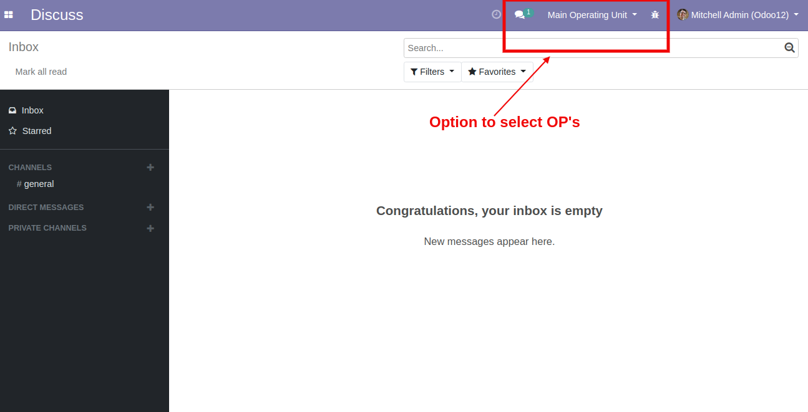
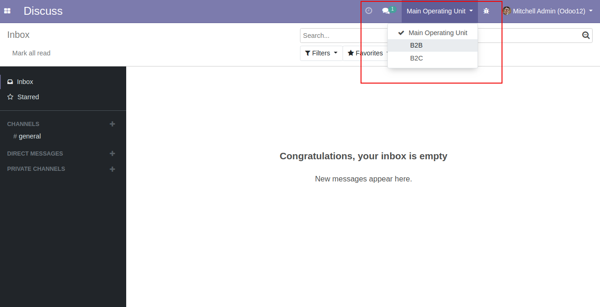
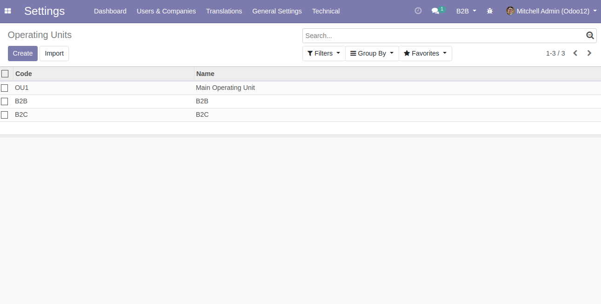

<section class="oe_container">
    <div>
        <div class="text-center">
            <h3 class="oe_slogan">Easy Operating Unit Switching</h3>
            <a target="new" href="https://github.com/Vanneri/Odoo-addons/tree/12.0/web_switch_operating_units">
                
            </a>
        </div>
    </div>
</section>
<br/>
<section class="oe_container oe_dark">
    <div class="oe_row oe_spaced">
        <div class="oe_span12">
            <h2 class="oe_slogan">Control Multiple OP</h2>
            <h3 class="oe_slogan">User With Multiple Operating Unit (OU) Can Easily Switch From Menu.
            </h3>
            <br/>
            <div class="oe_screenshot" style="text-align: center;">
                <h4 class="oe_slogan">Main View</h4><br/>
	            <br/><br/>
                <h4 class="oe_slogan">Drop Down To Choose OP</h4><br/>
	            <br/><br/>
                <h4 class="oe_slogan">Operation Unit Configuration</h4><br/>
                <br/><br/>
            </div>
        </div>
    </div>
</section>

<section class="oe_container oe_dark">
    <div class="oe_row">
        <div class="oe_span12 oe_centeralign">
            <br/>
            <h3>Contact Me For Support, Query, Customization</h3>
            <br/>
                Email : <a href="mailto:vanneri.odoodev@gmail.com" subject="Odoo Trading Module">Email Support</a><br/>
            <br/>
        </div>
    </div>
</section>
